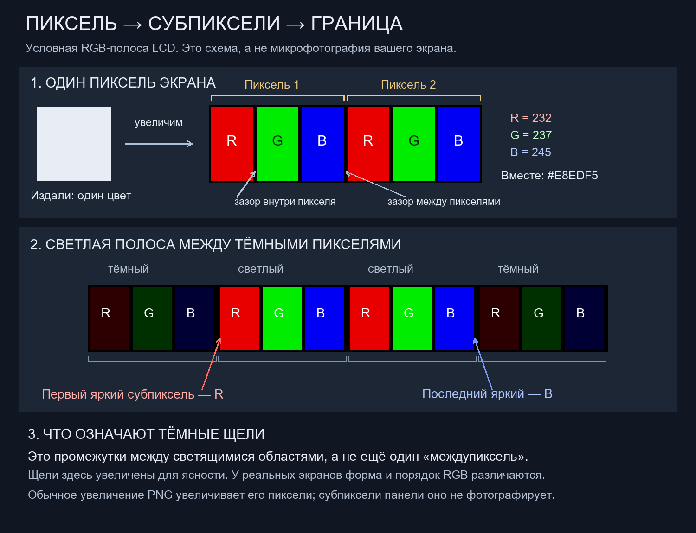
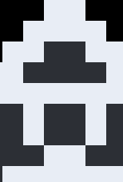

← Исследование глифов · Все исследования
13 ноября 2026 · 0.001 · исследовательский разбор
Почему у светлой границы видны красный и синий края?
На пользовательской разметке красным отмечены левые края светлых вертикальных полос, синим — правые. Это согласуется с возможной каймой от RGB-полос экрана. Но устройство панели и её оптика не исследованы: причина именно на этом экране пока не установлена.

Три разных масштаба
- Клетка глифа — квадрат нашей модели. При увеличении он может занимать много пикселей изображения и экрана. Все рассматриваемые глифы клеточные.
- Пиксель PNG хранит значения R, G, B и прозрачность. В файле нет фотографии микроструктуры монитора. Соответствие пикселя PNG пикселю панели зависит от масштаба вывода.
- Пиксель экрана в показанном варианте состоит из соседних красной, зелёной и синей светящихся областей — субпикселей. Издали их свет воспринимается совместно.
В обычном горизонтальном порядке RGB красная область находится слева от зелёной, синяя — справа. Поэтому крайняя яркая часть светлого вертикального штриха слева — R, справа — B. Такая пространственная разнесённость позволяет увидеть цветную кайму, хотя файл не содержит отдельной красной линии. Основа схемы — описание расположения субпикселей Microsoft. Связь с конкретным наблюдением пользователя — гипотеза.
Промежуток не является «междупикселем» или четвёртым субпикселем. На схеме это тёмное пространство между светящимися областями. В реальной LCD-панели есть нерабочие промежутки и маска; их размеры зависят от конструкции. Порядок RGB, показанная форма и пропорции не универсальны: встречаются другие схемы, включая BGR. Устройство конкретного монитора по обычному скриншоту определить нельзя.
Что точно находится в присланном PNG


В изображении 154 × 228 обнаружены ровно три непрозрачных цвета. Красных пикселей и отдельных промежуточных оттенков на границе нет. Светлый цвет немного холодный: B = 245 больше R = 232. Тёмно-серый — отдельные области рисунка, а не полупрозрачная кайма.
| Цвет | R, G, B | Пикселей файла |
|---|---|---|
| #E8EDF5 | 232, 237, 245 | 19010 |
| #2C2F35 | 44, 47, 53 | 12072 |
| #000000 | 0, 0, 0 | 4030 |
Участки границ идут по прямым ступеням; например, в строке y = 60 пиксель x = 54 светлый, x = 55 тёмно-серый. Между ними в файле нет третьего переходного пикселя. Это описание статического изображения, не последовательности свечения «серый, потом белый». Фазы обновления физической панели этим PNG не измеряются.
Программное сглаживание, масштабирование и видеосжатие могут менять уже выводимое изображение; оптика тоже может влиять на восприятие края. Их вклад здесь не измерен. ClearType специально работает с текстом — само наличие PNG не означает, что к глифу применён ClearType. Назначение ClearType у Microsoft.
Увеличить PNG и увидеть настоящие субпиксели монитора нельзя: так увеличатся пиксели файла, а аппаратная структура панели останется прежнего размера. Для наблюдения реальных элементов нужна оптическая лупа или макросъёмка. Наша картинка выше именно объясняет возможное устройство, а не выдаёт его за измерение.
Точный подсчёт цветов и хеш источника · Исходник проверки и схемы · К пунктирной нити и 19 листам глифов.